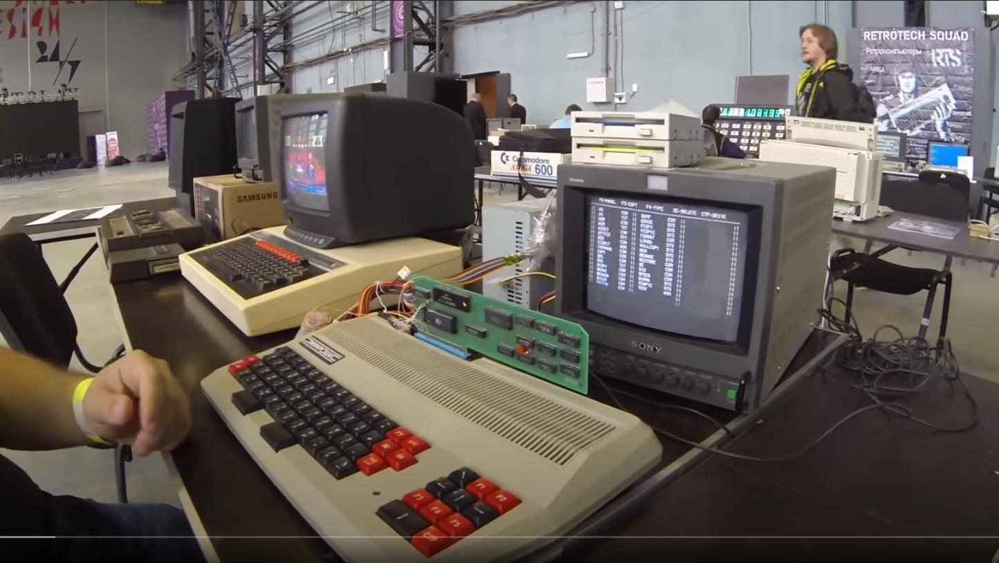

Ниже приведен кадр из видеоролика "КАК ИГРАЛИ В СССР". Эти кадры были сняты на фестивале компьютерного искусства ChaosConstruction, состоявшегося 26 авг 2017 в г. Санкт-Петербург. Оригинальное видео можно так же найти на Youtube.
На этих кадрах, любитель ретрокомпьютеров Тим Ташпулатов демонстрирует возможность подключения дисковода к ПЭВМ Микроша.

Контроллер на этом кадре очень похож на серийно выпускаемый контроллер НГМД. Как говорят знающие люди, это вручную изготовленная реплика серийного контроллера. Контроллер построен на достаточно простой элементной базе. Удивительно, что к нему подключен дисковод на 3,5 дюйма, хотя в то время были рапространены 5-дюймовые дисководы, и контроллер был изначально явно расчитан на другой формат дискет.
В общем, на видео демонстрируется очень загадочная вещь, которая исчезла месте с разрушением советского проекта. Схема контроллера была утеряна в 90-х, однако энтузиасты смогли найти один разломанный экземпляр контроллера, сделали его реплику, прошили, и контроллер заработал.
В контроллере применяется микросхема ПЗУ объемом 4 Кб, в которой размещен RK-DOS. Этот RK-DOS - это небольшая прошивка, которую можно назвать операционной системой, хотя на самом деле это больше похоже на драйвер дисковода, поддерживающий консольные команды. Тем не менее, в RK-DOS поддерживаются базовые команды для работы с файлами:
На дискете с RK-DOS дополнительно шли системные программы, которые расширяли возможности контроллера:
Удивительно, но в RK-DOS поддерживаются потоки ввода-вывода, как во взрослых командных оболочках. Всего есть три потока:
Например, можно было дать такую команду:
A> TYPE CON,FILE.TXT
Эта команда позволяет создать файл FILE.TXT с клавиатуры. То есть, весь консольный ввод будет перенаправлен в файл на диске. Аналогичная команда в операционной системе Linux выглядит так:
$ cat > file.txt
Можно было включить "режим печатной машинки", когда каждый символ, вводимый в терминале сразу отправлялся на принтер:
A>TYPE CON,PRN
В операционной системе MS DOS, похожая команда выглядела так:
A:\> COPY CON PRN
На экране комьютера видна некоторая Norton-подобная среда с тремя колонками имен файлов. Однако, это не двухпанельник, а обозреватель-запускатель программ и файлов.